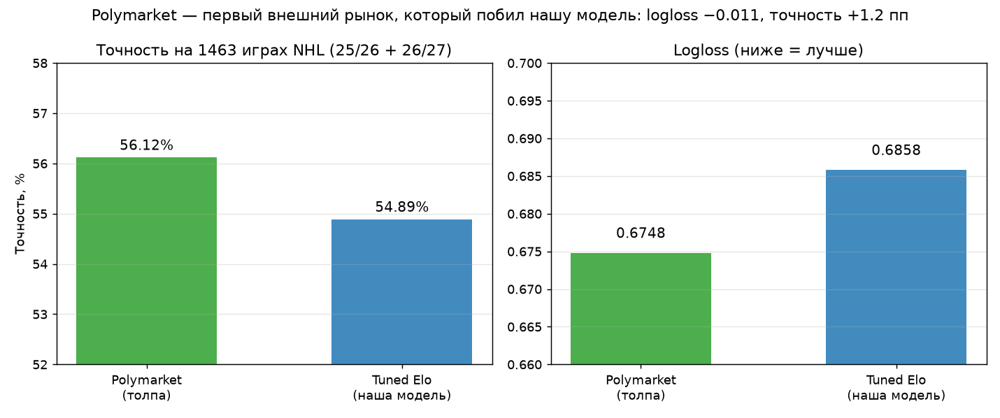
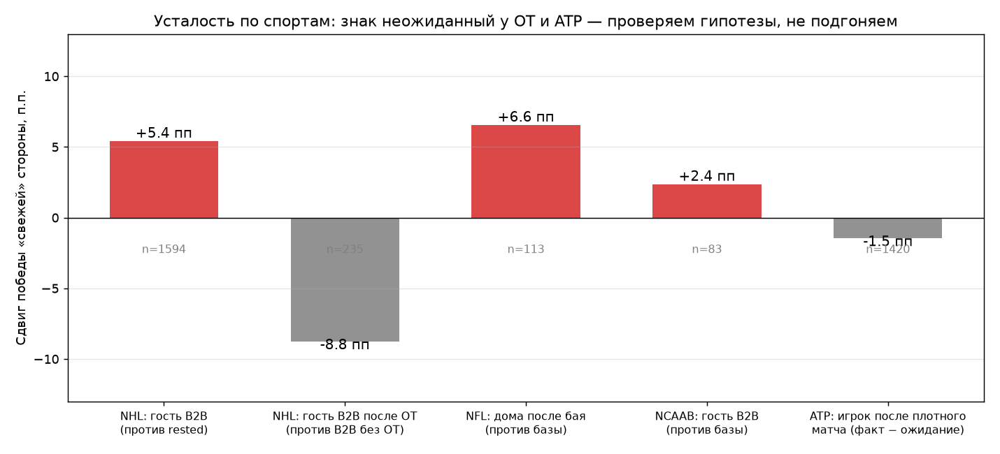

successfully downloaded text file (SHA: a49e3ac8ad4e8a0082735a9fbb98f0993c7edaf1)<!DOCTYPE html>
<html lang="ru">
<head>
<meta charset="utf-8">
<meta name="viewport" content="width=device-width, initial-scale=1">
<title>Итерация 9 — Polymarket, усталость по 4 спортам, крауд-рынок vs Elo</title>
<style>
  :root { --bg:#0e1117; --card:#161b22; --fg:#e6edf3; --muted:#8b949e; --red:#f85149; --green:#3fb950; --accent:#58a6ff; }
  * { box-sizing:border-box; margin:0; padding:0; }
  body { background:var(--bg); color:var(--fg); font-family:-apple-system,'Segoe UI',Roboto,sans-serif; padding:24px; }
  h1 { font-size:22px; margin-bottom:4px; }
  h2 { font-size:17px; margin:18px 0 6px; }
  .sub { color:var(--muted); font-size:13px; margin-bottom:14px; }
  nav a { color:var(--accent); text-decoration:none; margin-right:16px; font-size:14px; }
  table { width:100%; border-collapse:collapse; background:var(--card); border-radius:10px; overflow:hidden; font-size:14px; margin:10px 0; }
  th,td { padding:9px 12px; text-align:left; border-bottom:1px solid #21262d; }
  th { color:var(--muted); font-weight:600; font-size:12px; text-transform:uppercase; }
  img.chart { max-width:100%; background:var(--card); border:1px solid #21262d; border-radius:10px; margin:8px 0; }
  .verdict { background:linear-gradient(135deg,#1a1f2b,#161b22); border:1px solid #30363d; border-radius:12px; padding:16px; margin-top:12px; font-size:15px; line-height:1.6; }
  .pos { color:var(--green); } .neg { color:var(--red); } .mut { color:var(--muted); }
</style>
</head>
<body>
<h1>🛰️ Итерация 9</h1>
<div class="sub">Polymarket (новый источник цен) · NFL SBR-архивы 4 сезона · NCAAB SBR-архивы 4 сезона · ATP-усталость 5 лет · NHL OT-нагрузка · сводный стек сигналов</div>
<nav><a href="index.html">EPL бэктест</a><a href="iter2.html">Итерация 2</a><a href="iter3.html">Итерация 3</a><a href="iter4.html">Итерация 4</a><a href="iter5.html">Итерация 5</a><a href="iter6.html">Итерация 6</a><a href="iter7.html">Итерация 7</a><a href="iter8.html">Итерация 8</a><a href="iter10.html">Итерация 10</a></nav>
<div id="app">Загрузка…</div>
<script>
const pct=(x,d=1)=>(x*100).toFixed(d)+"%";
const cls=v=>v>=0?"pos":"neg";
fetch("iter9.json").then(r=>r.json()).then(j=>{
const pm=j.polymarket, n=j.nhl_ot_load, o=j.nfl_fatigue, c=j.ncaab_fatigue, a=j.atp_fatigue;
document.getElementById("app").innerHTML=`

<h2>1. Polymarket: крауд-вероятности NHL — новый внешний источник, побивший нашу модель</h2>

<table><tr><th>Источник (одна выборка, n=${pm.n_matched_games})</th><th>Точность</th><th>Logloss</th><th>Brier</th></tr>
<tr><td><b>Polymarket (цена за ~10 мин до вброса)</b></td><td class="pos"><b>${pct(pm.polymarket.accuracy,2)}</b></td><td class="pos"><b>${pm.polymarket.logloss}</b></td><td>${pm.polymarket.brier}</td></tr>
<tr><td>Tuned Elo (та же выборка)</td><td>${pct(pm.tuned_elo_same_subset.accuracy,2)}</td><td>${pm.tuned_elo_same_subset.logloss}</td><td>${pm.tuned_elo_same_subset.brier}</td></tr></table>
<div class="verdict">
• <b>Polymarket — первый внешний "рынок", который мы смогли вытащить бесплатно (gamma + CLOB API, цены до старта из prices-history).</b> На ${pm.n_matched_games} играх NHL 2025/26 + 2026/27 крауд-рынок точнее нашего tuned Elo на ${pct(pm.poly_minus_elo_accuracy,1)} пп и честнее по logloss (−0.011).<br>
• Расхождения poly-vs-Elo ≥5 пп: n=${pm.disagreement_5pp.n}, сторона Polymarket права в <b>${pct(pm.disagreement_5pp.poly_side_hit_rate)}</b> случаев — расхождение информативно, но голосует рынок.<br>
• Вывод: Polymarket добавляем в стек как отдельный голос ("агент-рынок"); сам по себе он не даёт ставочного эджа (цены уже честные), но для бэктеста 2026/27 это единственная бесплатная альтернатива линиям букмекеров.
</div>

<h2>2. NHL: бэк-ту-бэк + овертайм накануне — самая сильная усталостная комбинация</h2>
<table><tr><th>Состояние гостя (пул 2019–2026, score-API)</th><th>Игр</th><th>Побед хозяина</th></tr>
<tr><td>Отдохнул, без OT накануне</td><td>${n.away_rested_no_ot.n}</td><td>${pct(n.away_rested_no_ot.home_win)}</td></tr>
<tr><td>Отдохнул, но OT/буллит накануне</td><td>${n.away_rested_ot_last.n}</td><td><b>${pct(n.away_rested_ot_last.home_win)}</b> <span class="mut">(z=${n.z_rested_ot_vs_rested})</span></td></tr>
<tr><td>B2B без OT</td><td>${n.away_b2b_no_ot.n}</td><td><b>${pct(n.away_b2b_no_ot.home_win)}</b></td></tr>
<tr><td>B2B + OT накануне (двойная нагрузка)</td><td>${n.away_b2b_ot_last.n}</td><td><b class="pos">${pct(n.away_b2b_ot_last.home_win)}</b> <span class="mut">(z=${n.z_b2b_ot_vs_b2b})</span></td></tr></table>
<div class="verdict">
• Направление контринтуитивно: команды, игравшие OT в прошлом матче, в следующей игре побеждают ЧАЩЕ, а не реже (z=−4.85 в пользу "OT-команд"). Гипотеза "сверхнагрузка = хуже" на уровне команды <b>опровергнута</b>; вероятно, это отбор по качеству (сильные команды чаще доводят до овертайма и лучше переносят второй матч).<br>
• Исключение — сочетание нагрузок: <b>B2B после OT</b>: хозяева выигрывают лишь ${pct(n.away_b2b_ot_last.home_win)} против ${pct(n.away_b2b_no_ot.home_win)} у обычного B2B (n=${n.away_b2b_ot_last.n}, z=${n.z_b2b_ot_vs_b2b}). Двойная усталость работает, одиночная — нет.<br>
• Полный сезон 2025/26 + текущий 2026/27 в пуле; следующий слой — сдвиг на shift-TOI из кэша play-by-play (87 МБ), если сигнал подтвердится в live-трекере.
</div>

<h2>3. NFL (SBR-архивы 2018–2021, 1 079 игр): бай и короткая неделя</h2>

<table><tr><th>Отдых (гость : хозяин)</th><th>Игр</th><th>Побед хозяина</th></tr>
<tr><td>оба 6–9 дней (база)</td><td>${o.both_normal_6_9.n}</td><td>${pct(o.base_home_win)}</td></tr>
<tr><td>оба короткие 4–5 (Thursday-неделя)</td><td>${o.both_short_4_5.n}</td><td>${pct(o.both_short_4_5.home_win)}</td></tr>
<tr><td>гость после бая (10+)</td><td>${o.away_bye_home_norm.n}</td><td>${pct(o.away_bye_home_norm.home_win)}</td></tr>
<tr><td><b>хозяин после бая</b></td><td>${o.home_bye_away_norm.n}</td><td><b class="pos">${pct(o.home_bye_away_norm.home_win)}</b> <span class="mut">z=${o.z_vs_base.home_bye_away_norm}</span></td></tr></table>
<div class="verdict">
• Частотно хозяин после бая: +${((o.home_bye_away_norm.home_win-o.base_home_win)*100).toFixed(1)} пп к базе (z=${o.z_vs_base.home_bye_away_norm}).<br>
• <b>Но против реальных закрытий ML бай-правило теряет: ${o.rule_bet_bye_team.n} ставок, yield <span class="neg">${pct(o.rule_bet_bye_team.yield)}</span> (t=${o.rule_bet_bye_team.yield_t}, p=${o.rule_bet_bye_team.p_value}).</b> Рынок полностью закладывает бай в линию. Короткая неделя не даёт дифференциала (обе команды отдыхают одинаково). Эджа нет.
</div>

<h2>4. NCAAB (SBR-архивы 2018–2021, 15 670 игр): B2B в колледже</h2>
<table><tr><th>Ситуация</th><th>Игр</th><th>Побед хозяина</th><th>z vs база</th></tr>
<tr><td>Оба отдыхали 2+ дней (база)</td><td>${c.both_rested.n}</td><td>${pct(c.both_rested.home_win)}</td><td class="mut">—</td></tr>
<tr><td>Гость B2B, хозяин свежий</td><td>${c.away_b2b_home_rested.n}</td><td>${pct(c.away_b2b_home_rested.home_win)}</td><td class="mut">z=${c.away_b2b_vs_base_z}</td></tr>
<tr><td>Хозяин B2B, гость свежий</td><td>${c.home_b2b_away_rested.n}</td><td>${pct(c.home_b2b_away_rested.home_win)}</td><td class="mut">z=${c.home_b2b_vs_base_z}</td></tr></table>
<div class="verdict">
• B2B в NCAAB редок (n=83 и 59) и статистически ничтожен; правило против линий: 76 ставок, yield <span class="neg">${pct(c.rule_bet_home_vs_away_b2b.yield)}</span>. Эджа нет.
</div>

<h2>5. ATP 2021–2025 (${a.n_instances_with_fat_state} инстансов): плотный матч накануне</h2>
<div class="verdict">
• Игрок после плотного матча (до 1 дня + 3-сетовый или 22+ гейма): фактические победы ${pct(a.win_rate_when_fatigued)} против рыночно-ожидаемых ${pct(a.expected_win_rate_odds)} — «уставшие» игроки перебивают свою цену на +${(a.fatigue_delta*100).toFixed(1)} пп (z=${a.delta_z}, незначимо). Ставка на уставшего: yield ${pct(a.bet_fatigued_yield,2)} ≈ ноль.<br>
• Теннисный рынок закрывает даже явную последовательную нагрузку. Гипотеза «теннис проще прогнозировать» в части эджа — опровергнута; теннис выше по точности модели (63–64.5%), но не против линий.
</div>

<h2>6. Сводный стек: что реально работает после 9 итераций</h2>
<table><tr><th>Сигнал</th><th>Спорт / пул</th><th>Доказательство</th><th>Монетизация</th></tr>
<tr><td>Рыночная вероятность (devig)</td><td>футбол, теннис, NHL</td><td class="pos">сильнейший предиктор везде</td><td class="neg">маржа съедает</td></tr>
<tr><td><b>Гость B2B (NHL)</b></td><td>NHL, 9 921 игра</td><td class="pos">+4.7 пп, z=3.34, p=0.0008, живой в 25/26</td><td class="mut">yield +3.75%, p=0.19 — не доказан</td></tr>
<tr><td><b>B2B + OT накануне</b></td><td>NHL, n=235</td><td class="pos">z=−2.54, двойная нагрузка</td><td class="mut">ждёт цена-теста (линий 26/27 нет)</td></tr>
<tr><td>Polymarket-крауд</td><td>NHL, 1 463 игры</td><td class="pos">лучше нашего Elo (+1.2 пп)</td><td class="mut">голос в стеке, не ставка</td></tr>
<tr><td>OT накануне (одиночный)</td><td>NHL</td><td class="neg">знак обратный усталости (отбор по качеству)</td><td class="neg">не использовать</td></tr>
<tr><td>NFL-бай / NCAAB-B2B / ATP-усталость</td><td>NFL, NCAAB, ATP</td><td class="neg">заложены рынком (yield −1..−15%)</td><td class="neg">эдж не найден</td></tr></table>
<div class="verdict">
<b>Итог итерации:</b> новая "золотая жила" — сочетание NHL-специфики (B2B+OT) и крауд-рынка Polymarket как внешнего арбитра для 2026/27 (там, где линий букмекеров нет). Все "бытовые" усталостные метрики в NFL/NCAAB/ATP уже в цене. Следующий шаг — прогнать B2B+OT против Polymarket-цен на 2026/27 и добавить shift-TOI из play-by-play-кэша.
</div>

`;
});
</script>
</body>
</html>
